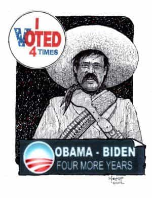

< < < Back
How The Establishment Will Shut Down Donald Trump – Return Of Kings
Skewed polls aside, “the people’s choice” Donald Trump has a serious shot at wining the Presidency, especially if Clinton’s weaknesses appear in the debates in a month’s time and his ongoing re-tooling of his campaign is a success. People really don’t like the old harridan, and there’s still a lot of campaigning left. Despite media smear campaigns running in overdrive from day one, Trump is still competitive with Crooked Hillary in most polls.
Trump is our “Hail Mary” pass as we watch the nation, our freedoms, and our culture melt down. Our fingers are crossed as we inch on towards decision day in early November. However, there are four ways Trump could be eliminated from ascendance to the Oval Office. Here are a few ways the globalists’ dirty trick book could stop Trump from fulfilling his stated mission to Make America Great Again.
1. Assassination
Trump’s assassination would be convenient for the globalist elite
Whether by CIA Jackals doing the job at home they’ve been doing for 50 years abroad, i.e. killing presidents and other world leaders and then making their deaths look like accidents, or a “lone gunman” mowing him down in RFK fashion, an assassination is a distinct possibility if Trump is the real deal.
His presidency could make Brexit look like a sneeze in terms of his capacity to be a wrecking ball tearing down the elite’s well-laid plans for world domination. Reaffirming America’s sovereignty flies in the face of plans to flood the country with so many immigrants it will be unrecognizable in a generation, and to redistribute its wealth to other nations while forcing its citizens into unending debt servitude.
Trump’s campaign represents a repudiation of 30 years or more of globalist policies. The Silenced Majority is finally having their say, and globalist psychopaths do not like it one bit. Why? Trump’s presidency could mean an end to the military-industrial complex gravy train that runs on endless, imperialistic wars brought to us by the neocons, an end to the fiscal policies that are ruining the middle class and creating a greater divide between the rich and the poor, an end to insane immigration policies that are really a program of ethnically cleansing native citizens from their own countries, an end to trade policy that suppresses wages at home and shifts manufacturing abroad, and the transformation of an economy in which people either work their asses off and have nothing or lay around and wait for a government check and get everything handed to them.
Perhaps a more likely scenario would be the easiest to pull off with just the right sleight of hand.
2. Voter Fraud

Many nations – including Mexico – require voter identification but not the U.S.
Make no mistake, the demographics of America are being changed with an end goal in mind. If it weren’t for those pesky white males the Democrats would already have a lock grip on political offices in the country, and no doubt would move the nation even farther to the left towards Communism. Changing demographics are how leftists take one state after the other out of the red column—permanently—and put them into the blue column.
We’ve all heard the accounts of everyone from illegals to dead people voting. But this is only one way democrats tilt the table.
Outright voter fraud has been common in much of the world, even though the sanctity of the ballot box has been taken for granted in the U.S. until recent years. In the last Presidential election, news emerged of a company called Scytl in Spain counting American votes from Barcelona. Imagine, the leader of the free world someday being selected by a little known company in another country. The company brags about how it has “transformed the global elections industry in only 15 years” and is gaining influence
In the U.S. As anyone with common sense knows, when vote counting is consolidated under one corporate entity all sorts of fraud are the likely result. Just this year, “Scytl successfully supported 3 states and 24 local jurisdictions during the 2016 Presidential Primary in February and Super Tuesday.” The company recently put out this press release about a conference it had in Florida to push its wares:
The conference presents an ideal opportunity to exchange best practices, discuss the future of elections and leverage how the voters across the US continue to benefit from the ramp up of the successful deployment of Scytl election modernization technology, proving the use of more secure and scalable technology is the way forward for a more efficient 2016 Presidential Election in November 2016.
The company is actively working to gain more even influence over U.S. elections. The press release reads like typical PR pap designed to fog the mind as they move to put your vote in their hands. In short, Scytl wants electronic voting, and the problem with that is algorithms can be devised to surreptitiously sway elections to the outcome desired by the vote counters in much the same way slot machines screw gamblers out of billions of dollars.
“Those who cast the votes decide nothing. Those who count the votes decide everything.” -Joseph Stalin
News also emerged of a computer programmer and former employee of both NASA and ExxonMobil testifying under oath before Congress about “election hacking.” Clinton Curtis told members of Congress how he was hired by Congressman Tom Feeney to build prototype software that would secretly rig an election to sway the result of a close election to one side. He built the software in 2000. Imagine what coding has been written since then.
In more recent years, hackers even proved Diebold election machines can be remotely hacked. Then there are stories of people selecting one candidate but the election machine changing it to another candidate in the booth. This could especially be a concern for older voters, who are not as tech savvy as younger voters.
Vote rigging is a real possibility, especially in a close election.
3. Right Wing “Terrorist Attack”
The media used the Dylan Roof shooting to take down a historical symbol
Could an October Surprise from the elites and their marionette Hillary come in the form of a False Flag “terrorist” attack from a crazed “right-winger”? It is plausible a false flag from one of the “patsies” of undercover operatives could be an effective public relations maneuver to destroy Trump’s campaign. Especially if the gunman happened to be a flag-waving, patriotic American, and a Trump supporter, or labeled as such in the media. We’ve all seen how quickly the mainstream media was able to get the rebel battle flag torn down because of young gunman Dylan Roof going on a rampage in South Carolina.
Logic matters little in the media echo chamber. It’s all about emotion, and generally what they sell is fear.
Right-wing groups will not get the carte blanche far left groups like Black Lives Matter did when they burned down cities and killed police officers. All it takes is one nut to ignite a firestorm the media will use to label all conservatives and Trump supporters on the alt-right as racists and every other pejorative in their boilerplate playbook.
4. Getting Bill Cosby’d
Character assassination is a convenient political tool that happens to work
Character assassination is a favorite of the left and the drive-by lamestream media. Regardless of his innocence or guilt, one must realize Bill Cosby was a convenient target for the Marxist left since he regularly promoted family values and criticized young African American men who didn’t appreciate the values of education, self-respect, and self-improvement. He encouraged African American families to teach their children moral values at a young age.
In short, Cosby was promoting the very things that go against the left’s playbook, as he railed against black crime and degeneracy in certain segments of the population. He frequently spoke about the breakdown of the family being responsible for many of the problems in the black community (problems that are now making their way into white communities as the family continues to break down and fathers are banished from society).
When rape charges surfaced, it was convenient for his enemies that his credibility on these issues was destroyed, and that women began to dogpile him with spurious accounts about sexual encounters from decades ago, perhaps seeking settlements on par with the large, undisclosed amount of money one women got out of him in the case of Andrea Constand v. William H. Cosby, Jr. When speaking of the events, Cosby told the press:
I have been in this business 52 years and I’ve never seen anything like this. Reality is a situation and I can’t speak.
An incident from Trump’s past could be dug up and used against him in a similar manner. He surely has a lot of enemies being a successful businessman who has been involved with so many deals. Big media smears have little to do with reality and a lot to do with semantics and agendas. Everyone has a person lurking in their past with the desire to see them brought down. The difference with a figure like Trump is there could a a lot of money and power in the deal for a woman who comes forward with a similar account, whether true or totally fabricated.
Stand Guard

The psychopathic thirst for wealth and power cannot be quenched by a mere country, only the entire world will do
Whether it’s these four means used to bring down Trump or another dirty trick from the globalist playbook, rest assured these or other calculated moves will be made against him the closer he gets to winning. There are those who stand to lose fortunes and stature if he becomes president. Worse, their plan of dominating Europe from Brussels and later the world from Washington is at risk. We are at a crossroads in human history. From here forward the world will continue with the nation-state, or the entire world will be bound together by “democratic” socialism, all true “diversity” and culture sacrificed in service of enriching an elite who will treat the rest of us like cattle on their world plantation.
If Trump goes down either in a rigged election, by character assassination or a literal assassination, we will be headed into uncharted territory. We can say goodbye to the America we once knew and loved, forever.
 If you like this article and are concerned about the future of the Western world, check out Roosh's book Free Speech Isn't Free. It gives an inside look to how the globalist establishment is attempting to marginalize masculine men with a leftist agenda that promotes censorship, feminism, and sterility. It also shares key knowledge and tools that you can use to defend yourself against social justice attacks. Click here to learn more about the book. Your support will help maintain our operation.
If you like this article and are concerned about the future of the Western world, check out Roosh's book Free Speech Isn't Free. It gives an inside look to how the globalist establishment is attempting to marginalize masculine men with a leftist agenda that promotes censorship, feminism, and sterility. It also shares key knowledge and tools that you can use to defend yourself against social justice attacks. Click here to learn more about the book. Your support will help maintain our operation.
Read More: Did The Anti-Donald Trump Riot In Chicago Help Trump Cruise To Victory On Tuesday?